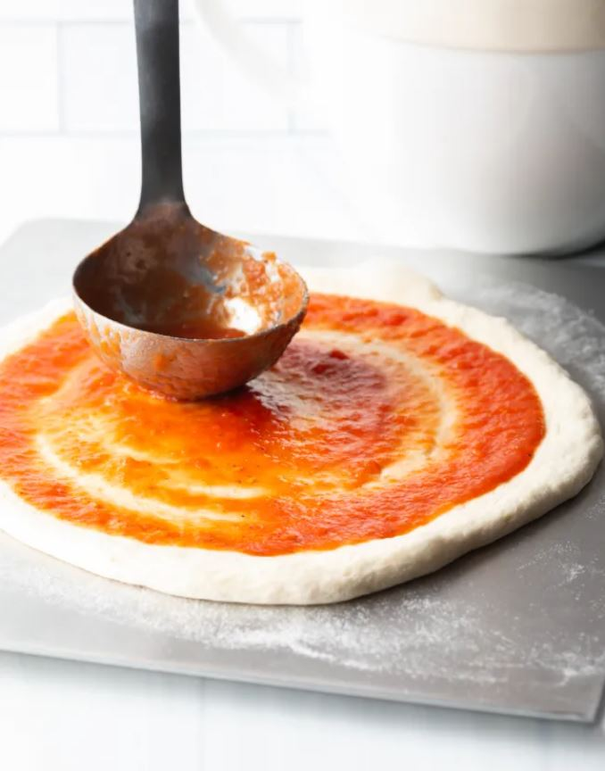

Nossas Pizzas
Calabrese
Tomate pelado italiano, mozzarella de búfala fresca, calabresa defumada, parmesão tipo grana maturado 12 meses, azeite de oliva extravirgem italiano e manjericão fresco orgânico.
Prosciutto Crudo
Tomate pelado italiano, presunto cru, mozzarella de búfala fresca, parmesão tipo grana maturado 12 meses e azeite de oliva extravirgem italiano.
La Vegetariana
Cogumelo paris, manjericão fresco orgânico, rúcula selvagem fresca, azeite de oliva extravirgem italiano e vinagrete de limão siciliano.
Depoimento de Clientes
Roberto Silva
Eu e minha família sempre tivemos ótimas experiências na Va fa' Napoli! Pizza muito saborosa, molho de tomate diferenciado, massa fresca e ambiente aconchegante. Sempre voltamos à Va fa' Napoli!
Jean Medeiros
Sou fã da Va fa' Napoli por trazer uma pizza diferente da típica pizza brasileira. São ingredientes e uma maneira de preparo diferentes, levando receitas tipicamente napolitanas, as quais acho deliciosas!
Caroline Schmidt
Conheci a Va fa' Napoli pelas postagens de amigos no Instagram. Vim conhecer com meu namorado e nos apaixonamos pelo sabor da pizza e pelo atendimento maravilhoso!
Rosane Pacheco
Um ótimo local para fazer um happy hour com os amigos ou vir jantar. As pizzas são ótimas e o ambiente é muito descontraído e confortável. Minha pizza preferida é a La Vegetariana!
Ana Maria Giudicci
Adoro a pizza da Va fa' Napoli, pois a massa da pizza me lembra as massas caseiras de pizza que minha mãe fazia quando eu era criança. Além disso o tempero e sabores das pizzas são muito bons.
Aprenda nossa receita!
Somos apaixonados por boa comida e buscamos levar uma vida descomplicada e cheia de sabor. Fazemos um dos pratos mais queridos do mundo do jeito mais simples possível, o napolitano. Usamos nossa criatividade na hora de imaginar e criar novos sabores, mas quando o assunto é massa, usamos uma receita que surgiu e se aprimora há mais de 300 anos em Napoli. Isso a gente não vê motivo nenhum pra mudar. Nossa massa fermenta por pelo menos 24 horas para ficar leve e saborosa, como deve ser. Ela também não leva nada além de água, sal, um blend especial de farinhas italianas e um pouquinho de fermento.
Nas nossas pizzas utilizamos apenas ingredientes que servimos na nossa própria mesa de casa, ingredientes de qualidade e fornecedores ímpares. Nossos tomates pelados De Cecco vem diretamente de tomates orgânicos naturais, extraídos de plantações na região de Fara San Martino, na Itália. Além disso, o nosso blend de farinhas vem da 5Stagioni, empresa reconhecida pela qualidade de moagem dos grãos e de trigo de excelência. Damos prioridade à ingredientes frescos e que traduzam em sabor o nosso amor por pizza!
Para a massa:- 400g de blend de farinhas
- 250ml de água
- 8g de sal
- 0,5 g de fermento biológico seco
- 1 lata de tomates pelados
- Mozzarella de búfala fresca
- Manjericão
- Azeite de oliva
- Sal a gosto
- Pimenta do reino
- Em uma tigela, junte a água e o sal e misture até dissolver todo o sal.
- Adicione metade da farinha de trigo e o fermento biológico seco e misture bem.
- Junte o restante da farinha de trigo e sove por cerca de 5 minutos, dentro da própria tigela. Cubra e deixe descansar por 30 minutos.
- Série de dobras – molhe as mãos com um pouco de água, pegue um lado da borda da massa e estique-a sobre ela mesma. Gire a tigela e repita. Faça esse movimento em toda a extensão da massa por 1 minuto, aproximadamente.
- Cubra e deixe fermentar em temperatura ambiente (cerca de 23 ºC é ideal) até crescer cerca de 75% do volume inicial (ou até quase dobrar). Cerca de 5 a 6 horas, dependendo da temperatura local. Se estiver quente, ele fermenta mais rápido.
- Corte os tomates pelados ao meio e descarte as sementes, se preferir. Pique bem os tomates, adicione sal, pimenta do reino e azeite a gosto. E está pronto, não precisa levar ao fogo.
- Molde a pizza, passe o molho em cima dela cobrindo até dois dedos antes da borda.
- Adicione mozzarella de búfala e manjeiricão à gosto e leve ao fogo por 30 minutos